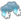
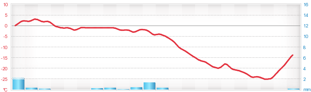
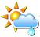
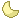

sää
Jyväskylä
Näytä sijainti kartalla
SÄÄENNUSTEET
SADEKARTAT
AJANKOHTAISTA
HAVAINNOT
HIIHTOKESKUKSET
Calpis Ski Center, Himos, Häkärinteet, Laajavuori, Messilä, Mielakka, Paavonrinteet, Riihivuori Hiihtokeskus, Sappee, Savivuoren Hiihtokeskus, Soinin Vuorenmaa, Vehmasrinteet
SÄÄN TAKAA -BLOGI
Talvenselän ajan
itsetutkiskelu
Aleksi Jokela 21.1
LIIKENNETIEDOT
MTV.fi SÄÄ
VENEILYSÄÄ
MERIALUEET
- Ruotsi
- Brittein saaret
- Läntinen Välimeri
- Itäinen Välimeri
KATSOMASI PAIKAT
- Jyväskylä
-25° - Helsinki
+25°
KATSOTUIMMAT PAIKAT
Suomi
Eurooppa Suomi Jyväskylä + Lisaa omasäähän Ohjeet
Ennustekartta, Suomi
Jyväskylä
Täsmäsää™
| Pe | La | Su | Ma | Ti | Ke | ||||||||||||||||
| 16.1. | 17.1. | 18.1. | 19.1. | 20.1. | 21.1. | ||||||||||||||||
| 14 | 20 | 02 | 08 | 14 | 20 | 02 | 08 | 14 | 20 | 02 | 08 | 14 | 20 | 02 | 08 | 14 | 20 | 02 | 08 | 14 | 20 |
|  | |||||||||||||||||||||
|  | |||||||||||||||||||||
| 3 | 3 | 3 | 3 | 3 | 3 | 3 | 3 | 3 | 3 | 3 | 3 | 3 | 3 | 3 | 3 | 3 | 3 | 3 | 3 | 3 | 3 |

Viimeisimmät havainnot
Havaintoasema:
+20 °C
3 m/s
Havaintoaika:
18.1. 21.20
Katso havaintohistoria
Pilvistä ja poutaa
Tuntuu kuin:
-6°
Ilmanpaine:
1009.3 hPa
Kastepiste:
-5°
Suht. kosteus:
85%
Näkyvyys:
20 km
Lumen syvyys:
32 cm
Aurinko nousee:
09.19
Aurinko laskee:
15.37
Päivän pituus:
6 h 18 min
3 päivan ennuste
| Tänään | Huomenna | Keskiviikkona |
|  | ||
| Ylin:+15° | Ylin:+15° | Ylin:+15° |
| Alin:+15° | Alin:+15° | Alin:+15° |
| 10 päivän ennuste "> | ||
| Päivitetty 20.1 20:31 | ||
| Maailman sää juuri nyt | ||
|---|---|---|
| Kuumimpia paikkoja | ||
| +41° | Upington, Etelä-Afrikka | |
| +34° | Ponda, Intia | |
| +34° | Kalgoorlie, Australia | |
| Kylmimpiä paikkoja | ||
|  | +41° | Upington, Etelä-Afrikka |
| +34° | Ponda, Intia | |
| +34° | Kalgoorlie, Australia | |
| Suomen sää juuri nyt | |
|---|---|
| Lämpimintä klo 13:30 | |
| +1.0°C | Hanko, Tulliniemi |
| Kylmintä klo 13:30 | |
| -13.0°C | Kilpisjärvi |
| Tuulisinta klo 13:30 | |
| 14,4 m/s | Kilpisjärvi |
Omasää